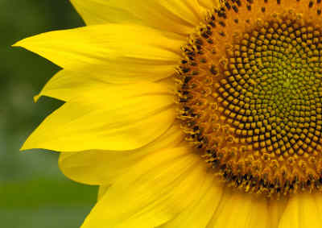
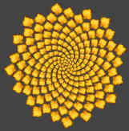
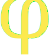
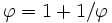
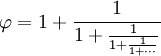
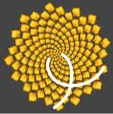
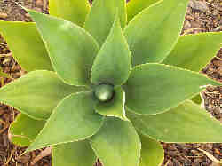
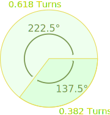

Nature, The Golden Ratio,
and Fibonacci too ...

Plants can grow new cells in spirals, such as the pattern of seeds in this beautiful sunflower.
The spiral happens naturally because each new cell is formed after a turn.
"New cell, then turn,
then another cell, then turn, ..."
How Far to Turn?
So, if you were a plant, how much of a turn would you have in between new cells?
| If you don't turn at all, you get a straight line. |
| But that is a very poor design ... you want something round that will hold together with no gaps. |
Why not try to find the best value for yourself?
Try different values, like 0.75, 0.9, 3.1416, 0.62, etc.
Remember, you are trying to make a pattern with no gaps from start to end:
(By the way, it doesn't matter about the whole number part, like 1. or 5. because they are full revolutions that point us back in the same direction.)
What Did You Get?
If you got something that ends like 0.618 (or 0.382, which is 1 − 0.618) then "Congratulations, you are a successful member of the plant kingdom!"
|  |
That is because the Golden Ratio (1.61803...) is the best solution, and the Sunflower has found this out in its own natural way. Try it ... it should look like this. |
Why?
Any number that is a simple fraction (example: 0.75 is 3/4, and 0.95 is 19/20, etc) will, after a while, make a pattern of lines stacking up, which makes gaps.

But the Golden Ratio (its symbol is the Greek letter Phi, shown at left) is an expert at not being any fraction.
It is an Irrational Number (meaning we cannot write it as a simple fraction), but more than that ... it is as far as we can get from being near any fraction.
| Just being irrational is not enough | |
|---|---|
|
Pi (3.141592654...), which is also irrational. Unfortunately it has a decimal very close to 1/7 (= 0.142857...), so it ends up with 7 arms. |
|
| e (2.71828...) also irrational, does not work either because its decimal is close to 5/7 (0.714285...), so it also ends up with 7 arms. | |
So, How Does the Golden Ratio Work?
| One of the special properties of the Golden Ratio is that it can be defined in terms of itself, like this: | |
|  | |
| (In numbers: 1.61803... = 1 + 1/1.61803...) | |
| That can be expanded into this fraction that goes on for ever (called a "continued fraction"): | |
|  | |
So, it neatly slips in between simple fractions.
Fibonacci Numbers
There is a special relationship between the Golden Ratio and Fibonacci Numbers (0, 1, 1, 2, 3, 5, 8, 13, 21, ... etc, each number is the sum of the two numbers before it).
When we take any two successive (one after the other) Fibonacci Numbers, their ratio is very close to the Golden Ratio:
|
A
|
B
|
B / A
|
|
|---|---|---|---|
|
2
|
3
|
1.5 | |
|
3
|
5
|
1.666666666... | |
|
5
|
8
|
1.6 | |
|
8
|
13
|
1.625 | |
|
13
|
21
|
1.615384615... | |
|
...
|
...
|
... | |
|
144
|
233
|
1.618055556... | |
|
233
|
377
|
1.618025751... | |
|
...
|
...
|
... |

So, just like we naturally get seven arms when we use 0.142857 (1/7), we tend to get Fibonacci Numbers when we use the Golden Ratio.
Try counting the spiral arms - the "left turning" spirals, and then the "right turning" spirals ... what numbers did you get?
Spiral Leaf Growth

This interesting behavior is not just found in sunflower seeds.
Leaves, branches and petals can grow in spirals, too.
Why? So that new leaves don't block the sun from older leaves, or so that the maximum amount of rain or dew gets directed down to the roots.
In fact, when a plant has spirals the rotation tends to be a fraction made with two successive (one after the other) Fibonacci Numbers, for example:
- A half rotation is 1/2 (1 and 2 are Fibonacci Numbers)
- 3/5 is also common (both Fibonacci Numbers), and
- 5/8 also (you guessed it!)
all getting closer and closer to the Golden Ratio.
|
And that is why Fibonacci Numbers are very common in plants. Here is a daisy with 21 petals |
 |
But we don't see this in all plants, as nature has many different methods of survival.

Golden Angle
So far we have been talking about "turns" (full rotations).
The equivalent of 0.61803... rotations is 222.4922... degrees, or about 222.5°.
In the other direction it is about 137.5°, called the "Golden Angle".
So, next time you are walking in the garden, look for the Golden Angle, and count petals and leaves to find Fibonacci Numbers,
and discover how clever the plants are ... !
Exercise
Why don't you go into the garden or park right now, and start counting leaves and petals, and measuring rotations to see what you find.
You can write your results on this form:
| Plant Name or Description: | ||
| Do the Leaves Grow in Spirals? Y / N | ||
| Count a group of Leaves: | ||
| How many leaves (a) ? | ||
| How many full rotations (b) ? | ||
| Rotation per leaf (b/a) : | ||
| Rotation Angle (360 × b/a) : | ||
| Are There Flowers? Y / N | ||
| How many petals on Flower 1: | ||
| Flower 2: | ||
| Flower 3: | ||
(But remember: nature has its own rules, and it does not have to follow mathematical patterns. But when it does it is awesome to see.)
* Notes About the Animation
Sunflower seeds grow from the center outwards, but on the animation I found it easier to draw the younger seeds first and add on the older ones.
The animation should continue longer to be the same as the sunflower - this would result in 55 clockwise spirals and 34 counterclockwise spirals (successive Fibonacci Numbers). I just didn't want it to take too long.
The spirals are not programmed into it - they occur naturally as a result of trying to place the seeds as close to each other as possible while keeping them at the correct rotation.